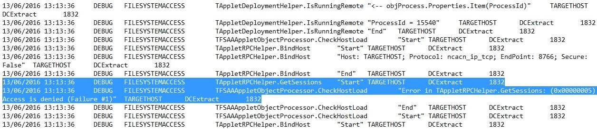
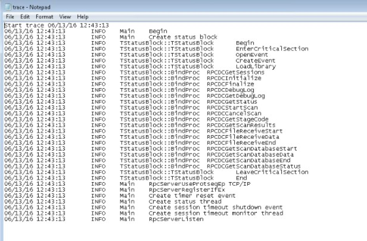
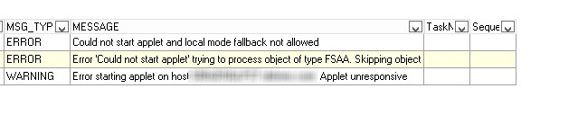

Summary: Special security settings are required for FSAA to work in applet or proxy mode. NOTE: These settings are in place by default in Windows 7 OS.
Issue: Running the FSAA applet is not technically supported on all target/proxy Windows operating systems. Against some OSes (e.g., Windows 7), when running FSAA against a target host in applet mode, or when running FSAA as a service without Secure RPC enabled, the applet process will start, but will deny access to the StealthAUDIT job trying to communicate with the applet process (StealthAUDITRPC.exe). Firewall is open and for requisite ports, but FSAA System Scan job log indicates "Access Denied":

Even though trace log on applet indicates that it's listening:

No applet log gets created, and the scan eventually fails (after about 5 minutes, the default applet communication timeout). Messages for host:
Error in TAppletRPCHelper.GetSessions: (0x00000005) Access is denied"

Instructions: This behavior is because of a security feature introduced in Windows 2003 SP1 called RPC Interface Restriction (https://technet.microsoft.com/en-us/library/aa995844(v=exchg.80).aspx). This prevents unsecured RPC calls. The setting requires that you create a registry entry to change from the default.
There are two ways around this:
Change the setting on the target/proxy host in via the registry (tested)
- Create the following registry key:
- Create a DWORD value called "RestrictRemoteClients"
- Set the value to 0
- End the StealthAUDITRPC.exe process, if it's still running, and kick off a new scan.
- Install the FSAA Applet as a Service and configure it to run with SecureRPC, per FSAA instructions.
- Restart FSAA service (StealthAUDITRPC.exe)
Product: StealthAUDIT
Module: SA - DC - FSAA - Activity;SA - DC - FSAA - DFS;SA - DC - FSAA - Sensitive Data
Versions: V7.x
Legacy Article ID: 1492